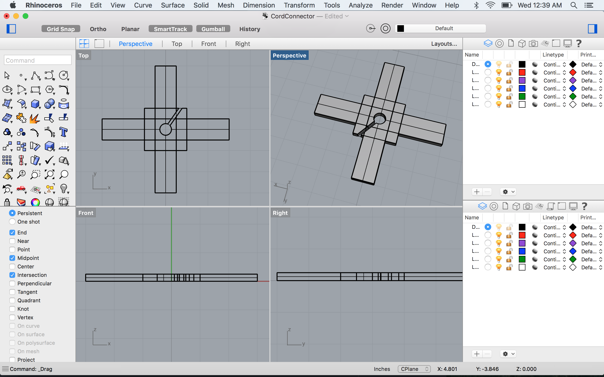
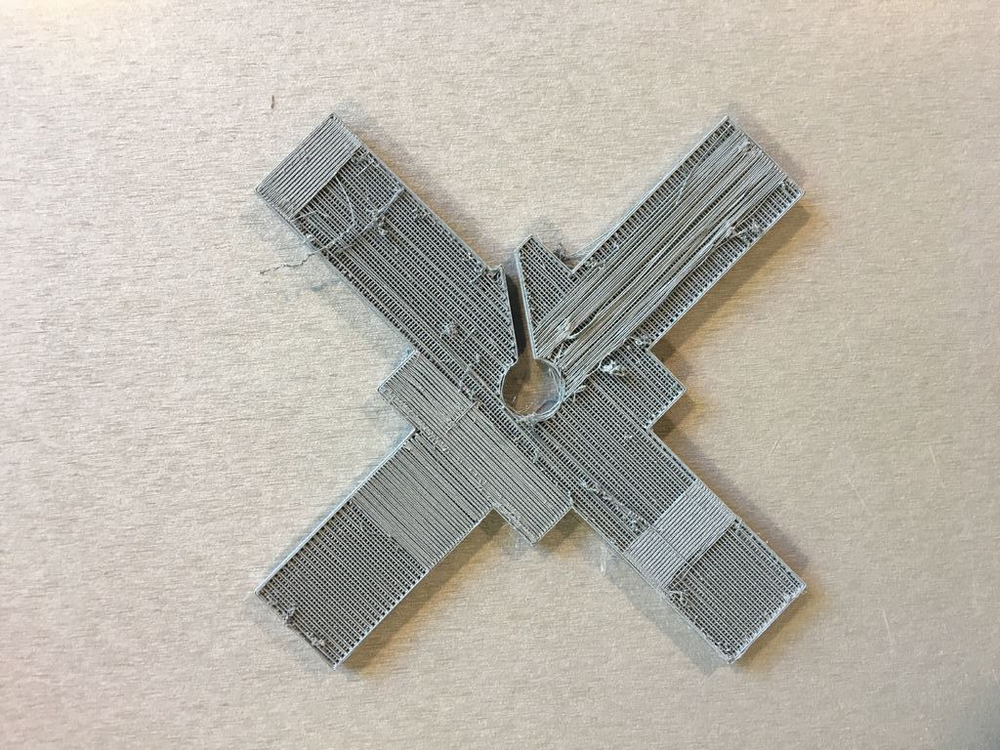
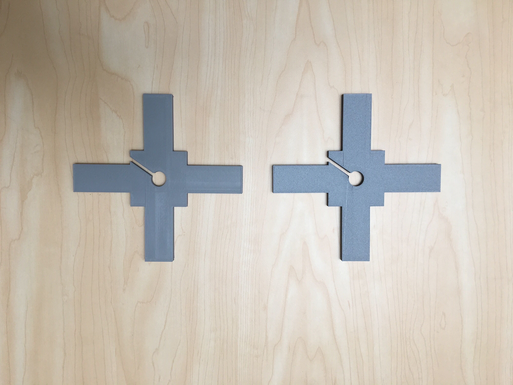
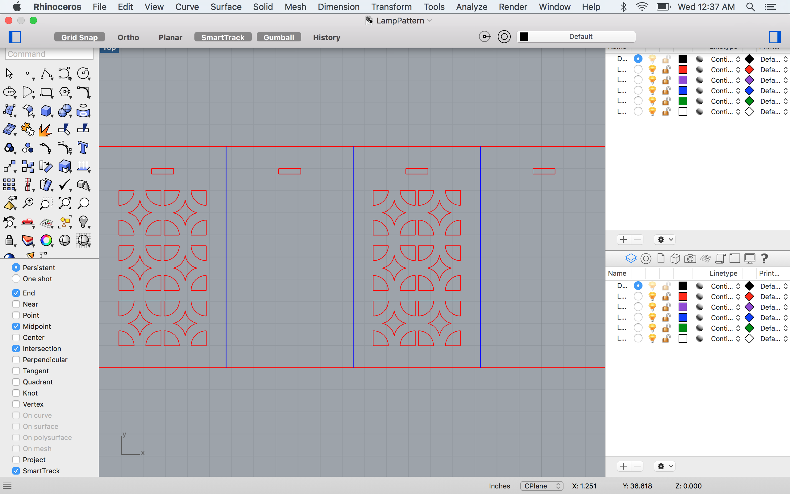
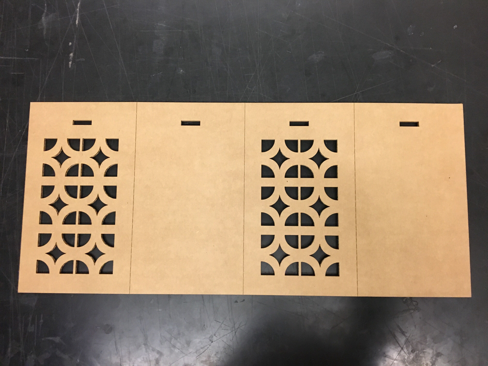

Assignment 3: 3D Printing + Lasercutting Lamp

This project continues to explore screen block patterns through 3D printing and lasercutting.
Materials and Tools:
C flute cardboard
PLA filament
Rhino
Hanging Lamp Cord
Step 1. 3D Printing
When we were tasked with this assignment, I was excited that I would be able to apply my ongoing theme into the project. The vision for my lamp shade came immediately: a rectangular prism with breeze block patterns laser cut from the panels. With the lampshade design in mind, I brainstormed different ways to incorporate a 3D printed connector piece. Would this piece hold up the hanging pendant lamp? Would it hold pieces of cardboard in place? Ultimately, I designed a 6x6" cross-shaped lampshade fitting that would fit on the base of the pendant lamp and would serve as the cardboard connector.
I designed the connector in Rhino and test printed the design at 220°.

When I retrieved my print, I was disappointed to find a phyllo dough-like, flaky mess of a result:

I was concerned that my design caused the printing error but was determined to try again! Joshua supported me through the second print process and ensured that there were no errors in my design. When I ran the second print with the same printer settings, I was surprised to see wavy, reptile-skin-like folds on the printed surface.
With Joshua's permission (I wasn't trying to hog the printers!), I test printed two different filaments at 230° and found that the increase in temperature made the print much smoother. Each print took roughly 2.5 hours to complete.

Step 2. Lasercutting
The lampshade design and print process went very smoothly. I designed the shade pattern in Rhino.
The shade is a 10x23" rectangle with a straight line etching every 6." Folded up, the rectangle forms a rectangular prism. The decorative faces of the lamp have the Empress screen pattern cut out.
Iteration 1 (Etch: 7% power, 15% speed | Cut: 27% power, 10% speed) The base retangle measures 10X23" with connector slots measuring 1" wide and .25" long. Success!

Step 3. Assembly
With the success of both 3D and laser cut prints, assembly came very easily. I attached the 3D printed connector piece to the lamp cord, connected the attachment to interior of the rectangular prism, and voila! The box is held together by the connector and does not come apart with a light shaking.**Download the Rhino files for the lamp shade or the cord connector if you'd like to create your own cardboard breeze block lamp!
Collaborators:
Joshua Vasquez - Helped me troubleshoot errors with the 3D printer and different filaments
Connor Stein - Helped provide access to a laser cutter
Julie T. Do - Helped brainstorm different approaches to designing the 3D printed connector piece